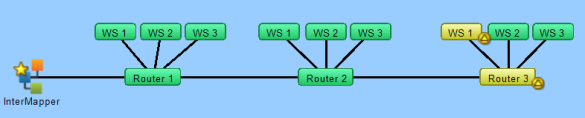
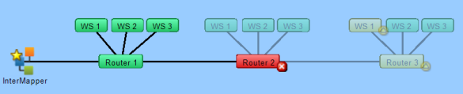
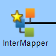

InterMapper can block or suppress notifications for devices that are "behind" or "shadowed by" another failed device. This helps you avoid receiving dozens (or hundreds) of notifications for devices that don't respond because there is a router or link down between InterMapper and that device.
This feature is called dependencies, because InterMapper can suppress the notifications for other devices that depend on the failed device.
There's no need to set the dependencies manually between devices on a map. Instead, InterMapper follows the links that are already part of the map.
To enable dependencies, you set a Vantage Point. The Vantage Point indicates the position from which InterMapper views the network. You usually set the Vantage Point on the actual device where InterMapper is running. Once you've set the Vantage Point, InterMapper can determine which devices are dependent on which other devices.
Example 1: All devices are up
The example below shows a map with several interconnected routers. The yellow star on the InterMapper icon shows that it is the map's vantage point.

Example 2: One device is down, shows dependent devices
In this example, Router2 has failed. InterMapper will send the normal notifications for Router2, but it will suppress notifications for any of the devices that depend on it. Those dependent devices' icons are dimmed on the map to show they're being shadowed by the failure.


A Vantage Point.
Notice the star
on the item.
To set a map's Vantage Point:
or
A small star appears next to the item, as shown here.
You may remove a Vantage Point or move it to a new item.
To move a Vantage Point to a new item:
To remove a Vantage Point:
or
A star next to the item disappears, and no Vantage Point is set. Notifications are sent for all map items.
When a device goes down (when no response has been received from it),dependencies are used to determine whether to suppress the notification.
Starting at the Vantage Point, InterMapper follows the links toward the device in question. If the only path to that device passes through a device, a link, or an interface that's already down, InterMapper knows that the device is shadowed, dims its icon, and suppresses the notifications.
If there is no failure along the path, or if there is no path at all (functional or not) to the device, InterMapper allows the notification to go through.
Even though a device is shadowed (and its notifications are suppressed), InterMapper continually probes the device to show its status.